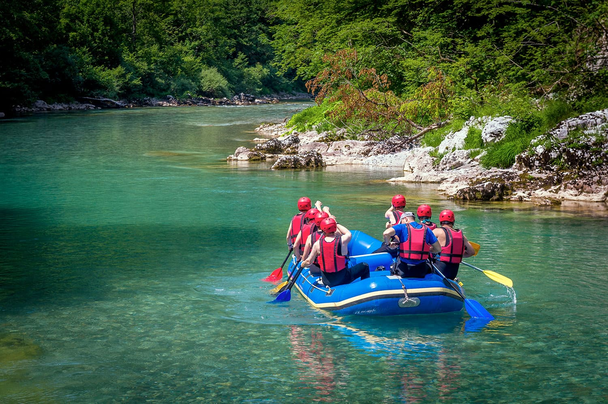
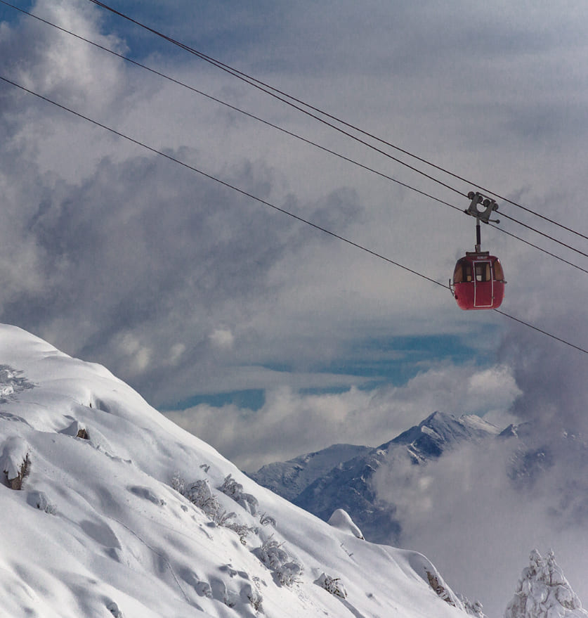

Excursion Lacustre
Navegacion Isla Victoria

Excursion Terrestre
Ruta de los 7 Lagos

Excursion Aventura
Rafting en el Rio Manso
Excursion Terrestre
Circuito Chico
Excursion Lacustre
Puerto Blest y Cascada de los Cantaros

Excursion Aventura
Dia de Ski Cerro Catedral
Excursion Terrestre
Cerro Tronador y Ventisquero Negro
